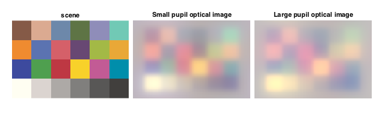

Contents
function validateDiffuser(runParams)
[validationReport, validationFailedFlag, validationDataToSave] = validationScript(runParams);
UnitTest.updateParentUnitTestObject(validationReport, validationFailedFlag, validationDataToSave, runParams);
end
Diffuser validation script
function [validationReport, validationFailedFlag, validationDataToSave] = validationScript(runParams)
Initialize return params
validationReport = 'Nothing to report.';
validationFailedFlag = false;
validationDataToSave = struct();
Initialize ISETBIO
s_initISET;
Isetbio validation code
Generate Macbeth scene with D65 illuminant
scene = sceneCreate('macbethd65');
Set the scene's angular size to 0.3 deg
sceneAngularSizeInDeg = 0.3;
scene = sceneSet(scene,'wangular', sceneAngularSizeInDeg);
Generate human eye optics with small pupil
pupilDiameterInMillimeters = 2.0;
pupilRadiusInMeters = pupilDiameterInMillimeters/2.0/1000.0;
smallPupilOptics = opticsCreate('human', pupilRadiusInMeters);
Generate optical image object with small pupil optics
oiSmall = oiCreate('human');
oiSmall = oiSet(oiSmall, 'optics', smallPupilOptics);
Compute the optical image for the test scene
oiSmall = oiCompute(scene,oiSmall);
Generate human eye optics with large pupil
pupilDiameterInMillimeters = 6.0;
pupilRadiusInMeters = pupilDiameterInMillimeters/2.0/1000.0;
largePupilOptics = opticsCreate('human', pupilRadiusInMeters);
Generate optical image object with large pupil optics
oiLarge = oiCreate('human');
oiLarge = oiSet(oiLarge, 'optics', largePupilOptics);
Compute the optical image for the test scene
oiLarge = oiCompute(scene,oiLarge);
Update validation params:
validationReport = 'Passed';
validationFailedFlag = false;
validationDataToSave = struct(...
'scene', scene, ...
'oiSmall', oiSmall, ...
'oiLarge', oiLarge...
);
Generate plots, if so specified
if (nargin >= 1) && (isfield(runParams, 'generatePlots')) && (runParams.generatePlots == true)
h = figure(1); set(h, 'Position', [100 100 650 200]); clf;
subplot('Position', [0.03+0.00 0.03 0.30 0.95]); imshow(sceneGet(scene, 'rgb image')); title('scene');
subplot('Position', [0.03+0.31 0.03 0.30 0.95]); imshow(oiGet(oiSmall, 'rgb image')); title('Small pupil optical image');
subplot('Position', [0.03+0.62 0.03 0.30 0.95]); imshow(oiGet(oiLarge, 'rgb image')); title('Large pupil optical image');
end

end
[ 6.] Results for 'validateDiffuser' probe: PASSED